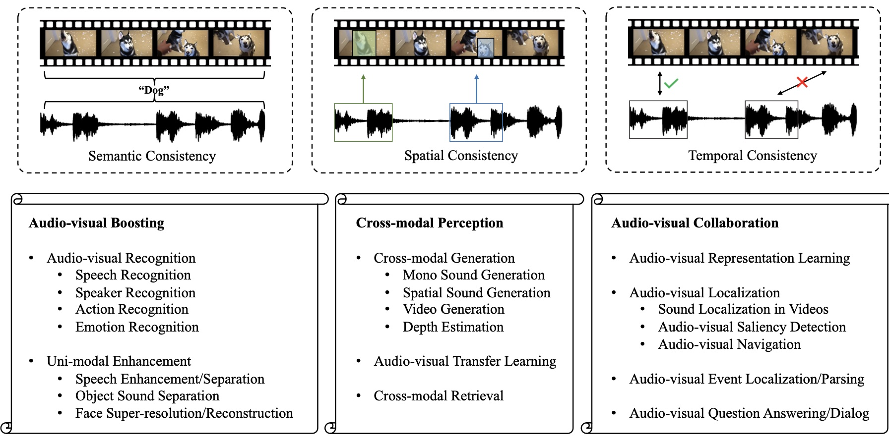
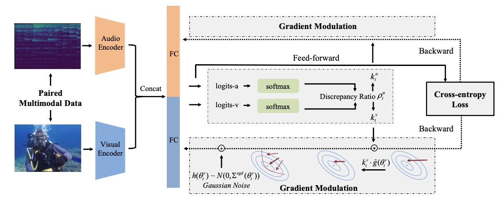
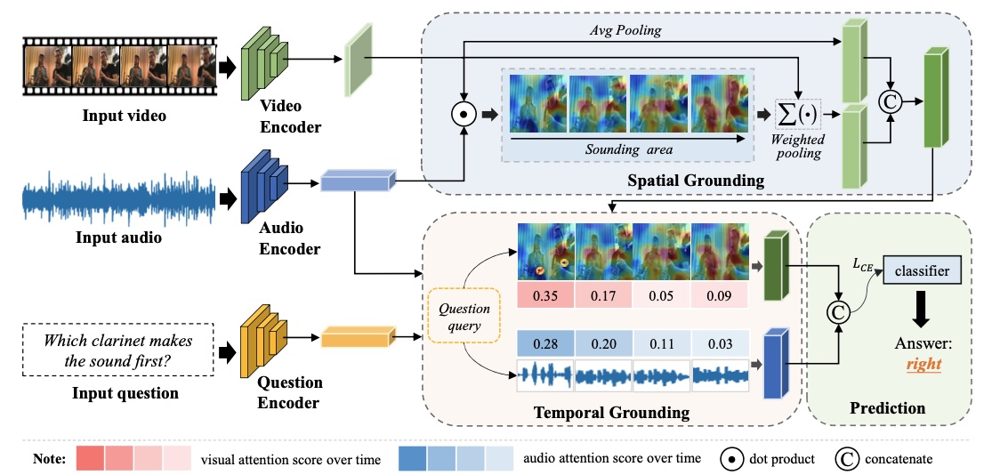
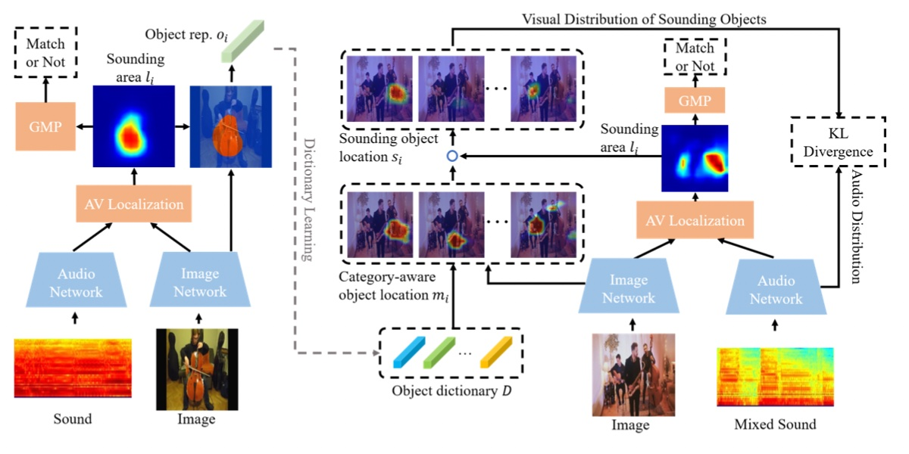

|
I am a second year PhD student at Gaoling School of Artificial Intelligence, Renmin University of China. I am advised by Prof. Di Hu, and co-adviced by Prof. Feiping Nie. Now my research interests focus on the mechanism of multi-view and multi-modal learning. I received my bachelor's degree in Automation from Beihang University in 2022. |

|
|
[2022-08] We wrote an article about recent advances in audio-visual learning! [website] [2022-05] Gave a talk @ 2022 BAAI Conference . Please find slides here! [2022-03] Two papers accepted by CVPR 2022, thanks to all co-authors![2021-12] One paper accepted by TPAMI, thanks to all co-authors! [2021-06] Graduate from University of Electronic Science and Technology of China! |
|
Conference Reviewer: CVPR 2022-2023, ECCV 2022, AAAI 2023 Journal Reviewer: TMM |
|  |
Yake Wei, Di Hu, Yapeng Tian, Xuelong Li Under review arXiv / website / awesome list A systematical survey about the audio-visual learning field. |
|  |
Xiaokang Peng*, Yake Wei*, Andong Deng, Dong Wang, Di Hu CVPR, 2022 (Oral Presentation) arXiv / code Alleviate optimization imbalance in multi-modal learning via on-the-fly gradient modulation. |
|  |
Guangyao Li*, Yake Wei*, Yapeng Tian*, Chenliang Xu, Ji-Rong Wen, Di Hu CVPR, 2022 (Oral Presentation) arXiv / project page Audio-Visual Question Answering and propose MUSIC-AVQA dataset. |
|  |
Di Hu, Yake Wei, Rui Qian, Weiyao Lin, Ruihua Song, Ji-Rong Wen TPAMI arXiv / project page Discriminative sounding objects localization. |
|
Updated at Jan. 2023
Thanks Jon Barron for this amazing template.
|